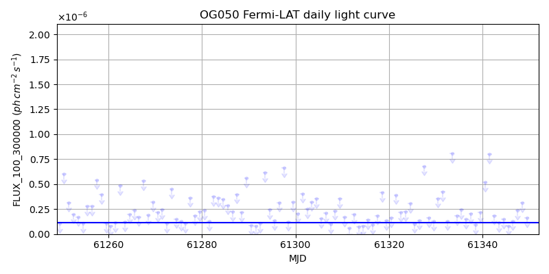
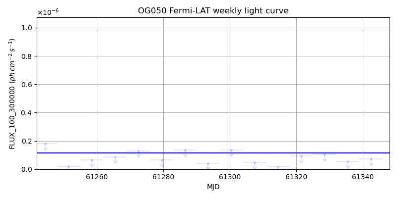
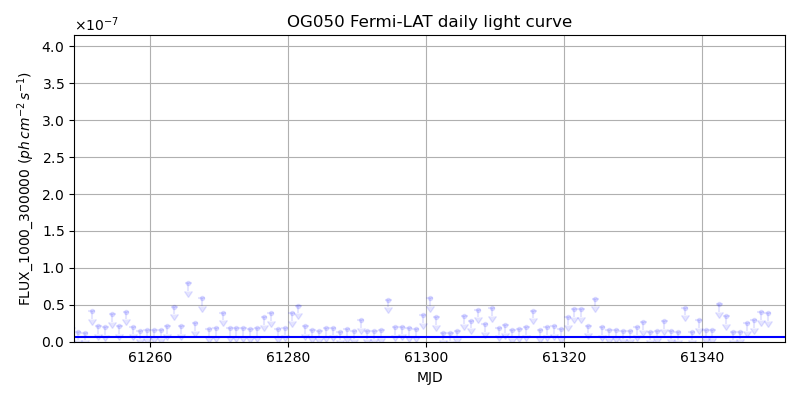
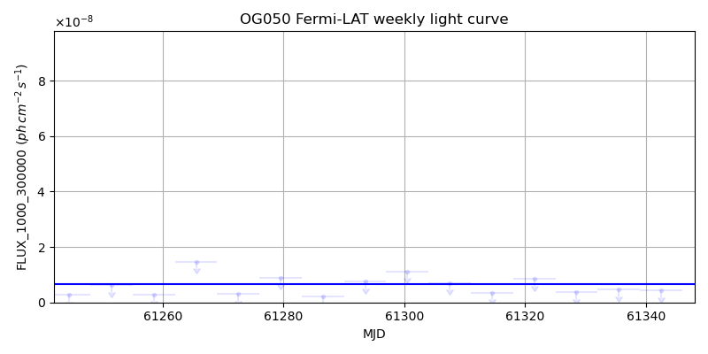

LAT Lightcurve site: https://fermi.gsfc.nasa.gov/ssc/data/access/lat/msl_lc/source/OG_050
NED: Query
Time of last update of this page: UT: 2026-11-06 16:16 (MJD: 61350.678)
| Property | Value |
|---|---|
| R.A. | 5:32:38.88 |
| Dec. | 7:32:42.0 |
| z | 1.254 |
| 3FGL SpectrumType | LogParabola |
| 3FGL PL Index | |
| 3FGL Flux_100_300000 | 1.14e-07 1 / (s cm2) |
| 3FGL Flux_1000_300000 | 6.65e-09 1 / (s cm2) |
| 3FGL Flux >200 GeV | 2.09e-12 1 / (s cm2) |
| 3FGL Extrap. Crab >200 GeV | 0.01 |
| 3FGL Flux After EBL Absorption >200GeV | 1.26e-14 1 / (s cm2) |
| 3FGL EBL Crab Fraction >200GeV | 0.00 |

| MJD | dMJD | Flux | dFlux | Frac3FGL | FracCrab>200GeV | EBLFracCrab>200GeV |
|---|---|---|---|---|---|---|
| 61345.50 | 0.50 | 8.20e-08 | 0.00e+00 | 0.00 | 0.00 | 0.00 |
| 61346.50 | 0.50 | 1.30e-07 | 0.00e+00 | 0.00 | 0.00 | 0.00 |
| 61347.50 | 0.50 | 2.36e-07 | 0.00e+00 | 0.00 | 0.00 | 0.00 |
| 61348.50 | 0.50 | 3.11e-07 | 0.00e+00 | 0.00 | 0.00 | 0.00 |
| 61349.50 | 0.50 | 1.62e-07 | 0.00e+00 | 0.00 | 0.00 | 0.00 |

| MJD | dMJD | Flux | dFlux | Frac3FGL | FracCrab>200GeV | EBLFracCrab>200GeV |
|---|---|---|---|---|---|---|
| 61314.50 | 3.50 | 1.76e-08 | 0.00e+00 | 0.00 | 0.00 | 0.00 |
| 61321.50 | 3.50 | 9.37e-08 | 0.00e+00 | 0.00 | 0.00 | 0.00 |
| 61328.50 | 3.50 | 1.03e-07 | 0.00e+00 | 0.00 | 0.00 | 0.00 |
| 61335.50 | 3.50 | 5.38e-08 | 0.00e+00 | 0.00 | 0.00 | 0.00 |
| 61342.50 | 3.50 | 7.27e-08 | 0.00e+00 | 0.00 | 0.00 | 0.00 |

| MJD | dMJD | Flux | dFlux | Frac3FGL | FracCrab>200GeV | EBLFracCrab>200GeV |
|---|---|---|---|---|---|---|
| 61345.50 | 0.50 | 1.34e-08 | 0.00e+00 | 0.00 | 0.00 | 0.00 |
| 61346.50 | 0.50 | 2.50e-08 | 0.00e+00 | 0.00 | 0.00 | 0.00 |
| 61347.50 | 0.50 | 2.90e-08 | 0.00e+00 | 0.00 | 0.00 | 0.00 |
| 61348.50 | 0.50 | 4.00e-08 | 0.00e+00 | 0.00 | 0.00 | 0.00 |
| 61349.50 | 0.50 | 3.89e-08 | 0.00e+00 | 0.00 | 0.00 | 0.00 |

| MJD | dMJD | Flux | dFlux | Frac3FGL | FracCrab>200GeV | EBLFracCrab>200GeV |
|---|---|---|---|---|---|---|
| 61314.50 | 3.50 | 3.49e-09 | 0.00e+00 | 0.00 | 0.00 | 0.00 |
| 61321.50 | 3.50 | 8.58e-09 | 0.00e+00 | 0.00 | 0.00 | 0.00 |
| 61328.50 | 3.50 | 3.73e-09 | 0.00e+00 | 0.00 | 0.00 | 0.00 |
| 61335.50 | 3.50 | 4.68e-09 | 0.00e+00 | 0.00 | 0.00 | 0.00 |
| 61342.50 | 3.50 | 4.35e-09 | 0.00e+00 | 0.00 | 0.00 | 0.00 |
--------------------------------------------------------- Using user-supplied coords: 5:32:38.88 7:32:42.0 2000 --------------------------------------------------------- FLWO UT night of: 2026-11-07 Local Sid. @ Midnight: 02:42 Sunset (-15.0) (local, UT): 18:39 01:39 Sunrise (-15.0) (local, UT): 05:36 12:36 Moonrise (local, UT): 05:16 12:16 Moonset (local, UT): Moon phase: 0.04 --------------------------------------------------------- AzTime LSID UT Obj_el Obj_az Mn_el Mn_az Sep. --------------------------------------------------------- 18:39 21:20 01:39 -23.3 64.2 -35.5 278.9 112.6 19:09 21:50 02:09 -17.5 69.1 -41.6 283.5 112.9 19:39 22:20 02:39 -11.4 73.6 -47.5 288.8 113.3 20:09 22:50 03:09 -4.7 77.8 -53.3 295.3 113.6 20:39 23:20 03:39 1.5 81.8 -58.7 303.4 113.9 21:09 23:50 04:09 7.6 85.7 -63.5 313.9 114.3 21:39 00:20 04:39 13.9 89.6 -67.5 328.0 114.6 22:09 00:50 05:09 20.3 93.6 -70.0 346.2 114.9 22:39 01:20 05:39 26.7 97.8 -70.5 6.9 115.3 23:09 01:51 06:09 33.0 102.4 -68.8 26.6 115.6 23:39 02:21 06:39 39.1 107.6 -65.4 42.5 116.0 00:09 02:51 07:09 45.1 113.6 -60.9 54.4 116.3 00:39 03:21 07:39 50.8 120.8 -55.8 63.5 116.6 01:09 03:51 08:09 56.0 129.7 -50.2 70.6 117.0 01:39 04:21 08:39 60.5 141.1 -44.4 76.4 117.3 02:09 04:51 09:09 63.9 155.4 -38.4 81.4 117.6 02:39 05:21 09:39 65.7 172.4 -32.4 85.8 117.9 03:09 05:51 10:09 65.6 190.6 -26.3 89.9 118.2 03:39 06:21 10:39 63.5 207.2 -20.2 93.7 118.5 04:09 06:51 11:09 59.9 221.0 -14.2 97.5 118.7 04:39 07:21 11:39 55.2 231.9 -8.1 101.2 119.0 05:09 07:52 12:09 49.9 240.5 -1.2 105.0 119.2 05:36 08:19 12:36 44.7 246.9 3.4 108.6 119.4 --------------------------------------------------------- Dark hours >55 deg.: 3.63 srcstart (UT): 2026-11-07 08:02 srcend (UT): 2026-11-07 11:40